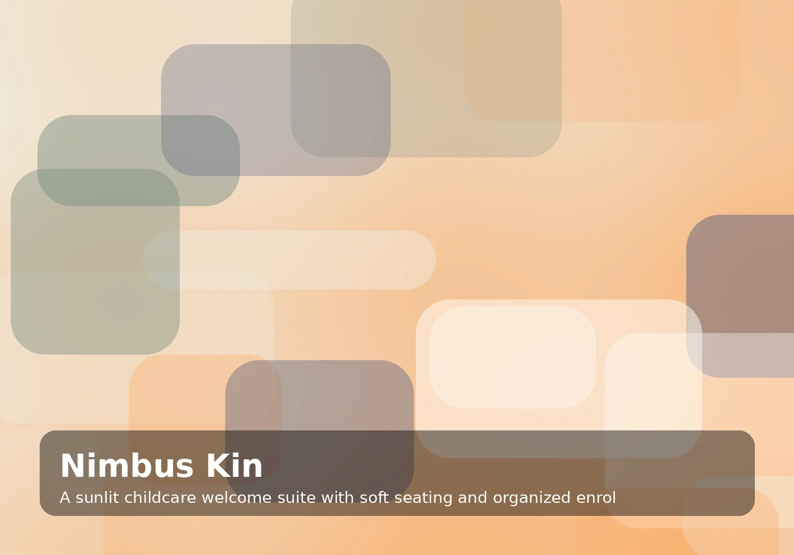

Clear policies for confident browsing
Privacy Policy for Nimbus Kin
Enrollment systems, staff rituals, and parent communication designed for calm growing centers. Built for independent childcare owners, school founders, and family experience directors, every page explains the work in direct English with useful details and a confident point of view.
Begin a considered conversation
Privacy Policy details
Nimbus Kin Childcare Architects provides this privacy policy to explain privacy practices, contact details, inquiry notes, analytics choices, and the respectful handling of personal information in clear language for visitors and prospective clients. The policy is written to support practical understanding, responsible inquiry handling, and transparent expectations without legal jargon. Nimbus Kin reviews these notes as services, tools, and communication practices evolve.
Nimbus Kin Childcare Architects provides this privacy policy to explain privacy practices, contact details, inquiry notes, analytics choices, and the respectful handling of personal information in clear language for visitors and prospective clients. The policy is written to support practical understanding, responsible inquiry handling, and transparent expectations without legal jargon. Nimbus Kin reviews these notes as services, tools, and communication practices evolve.
- Choice: For Nimbus Kin Childcare Architects, choice on the privacy policy page is written for independent childcare owners, school founders, and family experience directors. The
- Records: For Nimbus Kin Childcare Architects, records on the privacy policy page is written for independent childcare owners, school founders, and family experience directors. The
- Contact: For Nimbus Kin Childcare Architects, contact on the privacy policy page is written for independent childcare owners, school founders, and family experience directors. The